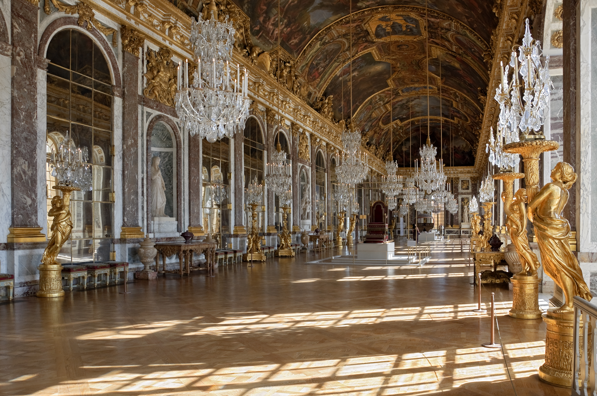
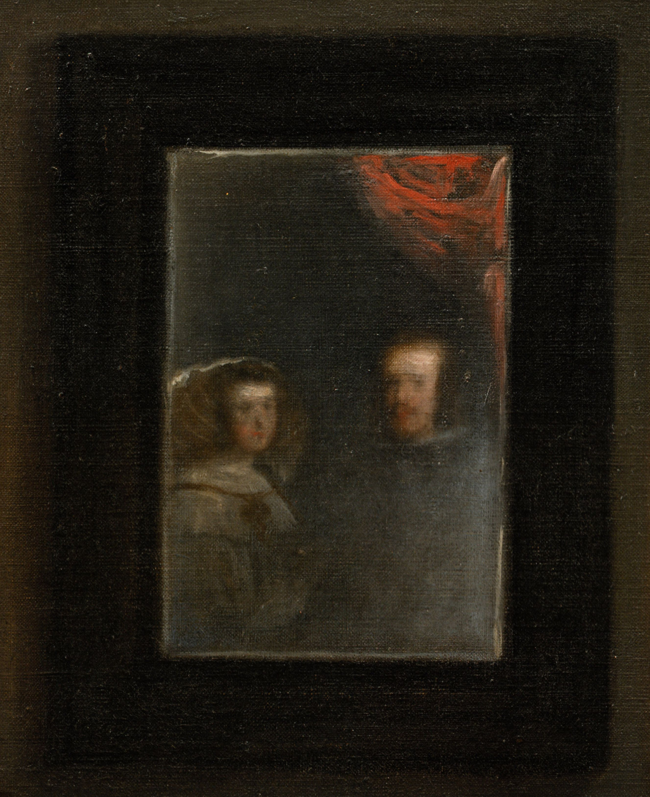
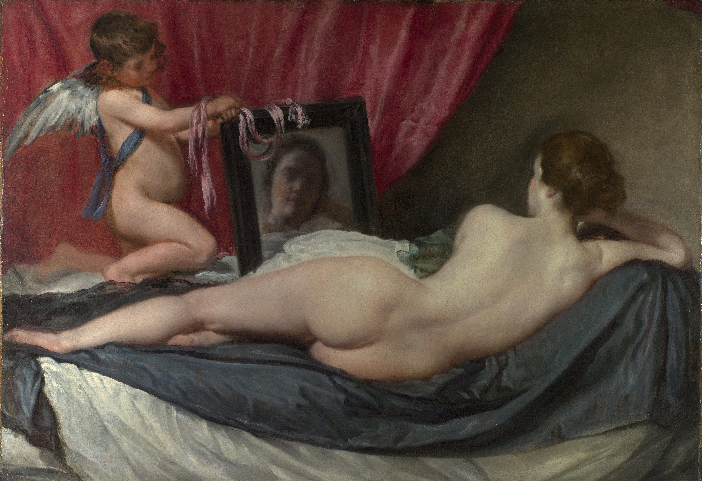
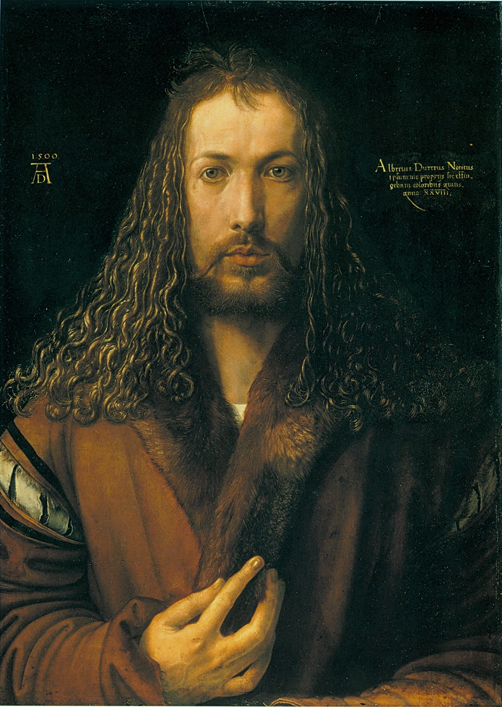
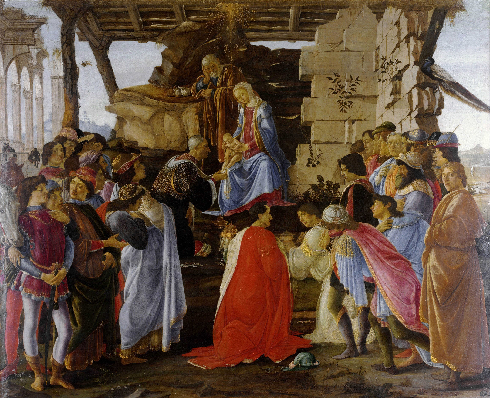
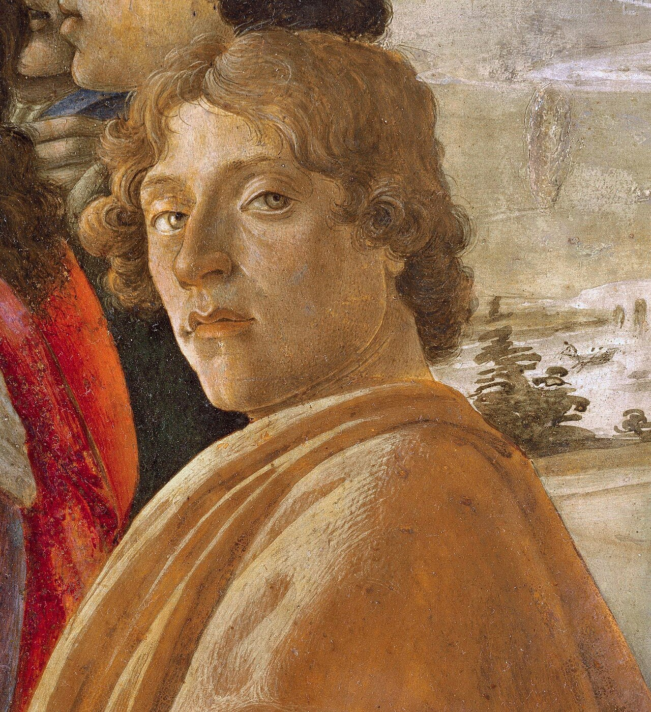

Capítulo 19
En todos los espejos
«Y la tierra estaba desordenada y vacía; y las tinieblas estaban sobre la faz del abismo. Y el Espíritu de Dios se movía sobre la faz de las aguas»… «Yo siempre he creído que, puesto que el Espíritu de Dios se movía sobre las aguas, el agua debía reflejarlo»
Josif Brodski. «Inclinarse ante la sombra»1. San Petersburgo, 2006, pág. 192
Colombina tras Pierrot:
No te abandonaré.
A. Blok
He aquí la pregunta: ¿qué apareció antes? ¿El hombre o el espejo? Probablemente apareció antes el espejo, pues el Espíritu de Dios se reflejó en la superficie del agua. Pero en el momento en que, al mirar su reflejo en el agua, el hombre comprendió que aquel que estaba allí era él mismo, es decir, se autoidentificó, se produjo el impulso de la autoconciencia. Ese soy yo en el espejo. El espejo es el objeto más antiguo, universal, sin fronteras civilizatorias ni temporales… ¿de qué? Objeto de la conciencia como reflejo de ti en el mundo y del mundo en ti. Y desde aquellos tiempos, cuya datación es imposible, nada ha cambiado en esencia. Espejo es el agua, el objeto reflectante fabricado expresamente por la humanidad y, sin duda, el sueño.
La representación del espejo como segundo Universo reflejado es propia tanto de la antigua filosofía arcaica china del «ba-gua» como del taoísmo, el confucianismo y el budismo. El dao es el espejo de todo lo existente: es frío, tranquilo, vacío. Refleja misteriosamente todo, pues él mismo es todo y nada. El vacío del espejo del dao manifiesta aquello hacia lo que está orientado. «… El espejo es una segunda vida reflejada. ¿Estará muerto? No, pues no está muerto ni vivo lo que se refleja en el espejo: es una segunda vida, un ser misterioso, semejante al ser de un fantasma o de una alucinación». (Huang Fan-cho. «El espejo del espíritu iluminado». Moscú, 1979, pág. 33).2
En el espacio vacío de la escena siempre surgieron (y hoy surgen exactamente igual) imágenes del mundo especular paralelo. Así el mayor filósofo y director de escena del siglo XX, Peter Brook, tituló su libro «El espacio vacío»3. Miren la superficie del espejo: está vacía, fría, inmóvil. Es un misterio en cuya profundidad surgen los dobles del mundo reflejado por la superficie especular.
Para toda la cultura de la antigua China, desde la cotidiana hasta la filosófico-mística, el espejo, en cualquiera de sus formas, tenía como mínimo tres significados: cotidiano, de doble y del más allá del espejo. Lo mismo ocurre en Europa y en otras civilizaciones. ¿Qué podemos añadir hoy a cómo esa peculiaridad de nuestra conciencia fue definida por los antiguos? Nada nuevo. Aquí no hay evolución, pero sí diversidad cultural en la comprensión de la cuestión: en el tiempo, en la tecnología de fabricación del espejo, en la aparición de algunos aspectos de su estudio, pero eso es todo. Lo principal permanece inmutable.
El primer significado del espejo es el cotidiano: yo ante el espejo.
Temprano por la mañana paso volando junto al espejo para no ver mi reflejo. Solo después, tras beber té cargado, empiezo a ponerme en orden según el ritual matutino. El espejo es mi controlador imparcial y frío. Solo me interesa mi aspecto externo. El espejo ayuda a correlacionar lo deseado y lo visible. Mis instantes ante el espejo equivalen a la eternidad. La cuestión está en los detalles, aunque hay quien opina que precisamente en los detalles está todo.
¿En qué espejos se acicalaban las bellezas de antaño? Las civilizaciones mediterráneas valoraban la belleza más que nada. La autorreflexión es uno de sus aspectos. Dicen que el espejo lo creó Hefesto4, y era una aleación de cobre con estaño, bronce arcaico con superficie pulida como un espejo. Pero aún antes, antes de eso, Venus, elevándose de las aguas, vio en ellas su reflejo y quedó satisfecha de sí misma. En aquellos tiempos inmemoriales, un hermoso joven llamado Narciso, al ver su reflejo, se quedó inmóvil, sobrecogido por su propia belleza. No podía apartar la mirada de sí mismo. Se convirtió en una hermosa flor de cera pálida que crecía del agua. Pero para nosotros ese mito, como todo mito, se ha convertido en nombre común de la vanidad. Desde entonces aparece el concepto de narcisismo. Suponemos que Narciso era hermoso, pero ¿quién lo sabe? Quizá era del montón, o feo, o muy feo, y simplemente estaba enamorado de sí mismo. Nuestros dandis de finales del siglo XIX decían simplemente: «Vivo y duermo ante el espejo»5. Ellos estaban eternamente ante el espejo-controlador, incluso si no lo tenían cerca. Quedamente la adulación teje sus redes, y ya ves lo que querrías ver, como el Rey en el famoso cuento de Andersen.
En China los confucianos siempre llevaban un espejo al cinto. Estar bien vestido, peinado, mantener la «máscara del rostro», sonreír: significaba ser un miembro modélico de la sociedad. El espejo señalaba puntillosamente la imperfección y el descuido de los detalles del traje y el peinado. Esto concernía a la etiqueta, al lado ético de la vida. Debes estar aseado, correctamente vestido, limpio y agradable para los que te rodean.
Tales razonamientos sobre la función utilitaria del espejo pueden parecer banales. Pero conciernen al uso cotidiano, más extendido, masivo, del espejo.
La historia del perfeccionamiento técnico del espejo está vinculada a las exigencias de la cultura. Por ejemplo, en el cambio de los siglos XVII y XVIII la nueva manufactura de Saint-Gobain en Francia6 pasó a la fabricación de espejos colados con amalgama de 2,7 m x 1 m. Fue una revolución en comparación con el espejo soplado. El secreto del espejo colado se guardaba tan celosamente como antes los secretos vidrieros de los espejos de Murano.
En torno a la producción de espejos hubo no menos asesinatos, espionaje y aventuras que en torno a la industria atómica y de hidrógeno en el siglo XX. Las nuevas exigencias de las damas melindrosas y los petimetres, de la vida cortesana europea, requerían tales espejos. Entraron en boga en la corte de Luis XIV en Francia, de Carlos I en Inglaterra, y también en España. Como antaño, su función cultural-cotidiana oscilaba: desde la autocomplacencia puntillosa o entusiasta en la autorreflexión hasta la función ético-presentable, cortesana. En Versalles, para Luis XIV, se creó por primera vez una gran Sala de los Espejos7.

En los cuadros de los pintores holandeses del siglo XVII vemos escenas de la vida de los holandeses, sus casas, paredes adornadas con mapas geográficos y espejos. Montaje inconsciente de macro y micromundos. El comercio y los viajes abastecían abundantemente las tiendas y mercados de las ciudades holandesas de productos exóticos. Los mapas, ejecutados artísticamente, eran el espejo del mundo, contraído en el punto de reflexión. Los espejos en marcos en la pared eran también reflejo del mundo doméstico: orden y limpieza, mujeres con cofias y delantales blancos, la compostura protestante. Suelos frotados hasta el brillo, revestidos de baldosas, cristal transparente de ventanas y vajilla. El espejo de los mapas y de las habitaciones forma el espacio, lo hace abarcable y adecuado al hombre.
En el siglo XVII en Holanda los particulares hacían compras de espejos, hasta 500.000 libras en 10 años. Y el duque de Orleans, en cuatro años, compró él solo en Saint-Gobain por 30.000 libras. Y hay que decir que no podemos juzgar sobre lo barato o lo caro. Uno de los contemporáneos, cierto duque de Lister8, escribía sobre París: «Aquí se ha logrado que el espejo cueste tan poco que ya no hay aquí ningún carruaje de alquiler, ningún fiacre, que no lleve fijado delante un gran espejo» (M. Lister. «Viaje por Francia», San Petersburgo, 1995, pág. 130).
El objeto de lujo se convierte en objeto de necesidad cotidiana, tiene industria de producción y comercio desarrollado.
Así sigue siendo hasta hoy. En los escaparates de las grandes tiendas, en las cabinas de los ascensores, en los cuartos de baño, en las polveras, en todas las oficinas públicas podemos ver nuestro reflejo en todos los espacios preespeculares y, sin profundizar más, arreglarnos el peinado (la peluca), el lápiz de labios, las medias, la sonrisa.
Espejos para damas elegantes, que son también espejos de la vida. Son espejos de la moral y del orden. Y si se piensa, los espejos fueron también lienzos pictóricos, en parte libros. Todos los diversos medios de reflexión, irreducibles a una uniformidad externa, crean la imagen de un modelo único. Y quizá incluso adormecedor, de perfecta semejanza con el sueño de uno mismo, del mundo en el que se vive o se querría vivir. Y más y más, hacia el designio de Dios sobre su creación.
¿Qué otro significado tenía el espejo además del cotidiano? El de doble, el del más allá del espejo.
«Y en el espejo el doble oculta el perfil borbónico…», escribía Ajmátova.9 Y en el espejo está realmente nuestro doble, nuestra sombra, nuestra esencia con perfil o rostro «borbónico» o de cualquier otro tipo. No del todo coincidente con nosotros mismos, tan queridos. Y de nuevo volvamos a los antepasados. La doctrina sobre la esencia dual del hombre, sobre su dualidad, era propia de todas las creencias antiguas. E incluso el mito de Narciso puede tener otro sentido: el opuesto. ¿Es él quien se ve a sí mismo o es el doble quien lo ve a él?
«En los espejos, en el agua y en toda superficie lisa y pulida se aparecen a nuestras miradas cuerpos sutiles, en todo semejantes a los objetos reflejados», escribía en sus reflexiones filosóficas «Sobre la naturaleza de las cosas» el escritor romano Lucrecio (siglo I a.C.)10. Del libro de este filósofo literalmente no se separaban los intelectuales epicúreos del siglo XVIII. Cuerpos sutiles, imágenes de sombra, incorpóreas. Escapan a la tangibilidad y a la sensualidad, pero son fieles y exactas. Precisamente así, exacta pero no tangible de otro modo que para el ojo, era la pintura monocroma china de «flores y hierbas».
(Tao Yuan-ming, siglos IV–V d.C.)11
Las sombras incorpóreas de los dobles en los espejos son ilusiones, no copias exactas de los objetos. Así lo pensaba Platón (República. Pág. 596).12 Pero él mismo escribió también sobre otra esencia de los reflejos: la sígnica, es decir, hacia otro conocimiento de la realidad a través del reflejo que se escapó de la caverna del cuerpo-carne.
Al conocimiento de sí mismo llamó el oráculo de Delfos. El signo del alma, como imagen de la sombra-doble, está ante nosotros, o más bien nosotros ante él, y demuestra a la más noble de las damas su perfil borbónico. «Y no sé qué hacer con él», concluye su poema Anna Andréievna Ajmátova.
Y por supuesto, el reflejo especular como interrogación sobre sí mismo, como autoanálisis, como conversación con uno mismo, comienza cuando el cuerpo y el espíritu inician su difícil polémica interior. En cuerpo sano no siempre hay espíritu sano. Una vieja leyenda cristiana apócrifa cuenta13 cómo las criaturas sin pecado del Señor, Adán y Eva, veían a Dios en el espejo y se comunicaban constantemente con él. ¿O quizá veían a Dios solo reflejado en el espejo? Pero he aquí lo significativo. Tras la caída, la superficie del espejo comenzó a oscurecerse, y ya no vieron más su Rostro. El reflejo del espejo, independientemente de su perfección técnica, como el cuadro en el marco, es menor que el espacio en el que nos encontramos nosotros mismos. En el espejo está el encuadre de ese espacio, de ese medio en el que nosotros mismos estamos. Primer plano. Esto intensifica la mirada sobre uno mismo, la autoobservación y el autoanálisis. En el espejo podemos ver lo que se esconde tras la apariencia externa y de ningún otro modo puede ser visto y comprendido. «¿Cómo me veo?» — «Maravillosamente», responderán los amigos. En realidad todos sabemos de nosotros mismos, y no consolará la honesta atención de la interrogación al espacio frío, reflejado y absolutamente desconocido.
Realidad y reflejo se sostienen y se revelan mutuamente. Los autorretratos los pintores los pintan, fundamentalmente, mirando al espejo. El autorretrato nunca es autoimagen, sino siempre interrogación sobre sí mismo o psicoanálisis. Mirada atenta y respuesta (o pregunta suspendida entre el pintor y su reflejo). Vincent van Gogh, Rembrandt, Albrecht Dürer dejan en el género del autorretrato la amarga confesión de toda una vida.
Velázquez dejó un único autorretrato14: el cuadro «Las Meninas», pero equivale al relato de su propia vida y de cómo la ve y qué piensa de sí mismo. Miren ese misterioso espejo de la vida.

El pintor se representa ante el caballete, con el pincel en las manos, en el anillo de modelos a los que pintó toda la vida. Niños, enanos, cortesanos, el perro, el jefe de la guardia en el vano de la puerta15 y el rey con la reina en el reflejo del espejo en la pared del taller. Sobre este cuadro se ha escrito mucho, lo han copiado mucho los pintores, incluido Picasso o empezando por él. Comentario equivalente al techo de la Capilla Sixtina, a Rafael o a Leonardo da Vinci. Pero nosotros hablamos solo del espejo como analizador de la esencia del reflejo.
Así pues, ¿a quién pinta el pintor? Pinta al rey y a la reina de España: a juzgar por el tamaño del lienzo, de cuerpo entero. Ellos, sin duda, posan de pie ante él. Pero en el espejo de la pared sus sombras difuminadas son de medio cuerpo. La pequeña infanta Margarita, niña encantadora, rodeada de su séquito de meninas, enanos, su educadora, la enana Bárbola, que nos muestra su orden. La infanta ha venido al pintor a ver cómo pinta a papá y a mamá. La infanta ha querido beber, y las meninas, hermosas como un arriate, le sirven agua en arcilla roja aromática. Todo esto es magnífico, pero en realidad el pintor Velázquez pinta todo el grupo en primer plano, con la niña en el centro, y las sombras en el espejo tras sus espaldas, y no las vemos enseguida, sino después. Más bien vemos la figura, desparramada como un borrón, del jefe de la guardia interior en el vano de la puerta.
Pinta este cuadro dentro del cuadro en un gran lienzo, y ante él hay un espejo montado de fragmentos en la pared. Espejo invisible para nosotros, refleja la composición de «Las Meninas». Los meticulosos investigadores de esta obra maestra de la pintura (y es sin duda una obra maestra) juran que Diego de Silva Velázquez nunca pintó un retrato doble de Felipe IV y su esposa Mariana de Austria. Y entonces podemos representar el asunto de la composición de otro modo. Velázquez pinta su autorretrato, y qué hay en el lienzo no lo sabemos. Lo rodean quienes siempre fueron sus modelos, es decir, nos cuenta lo principal. Él es Velázquez (y este nombre, como el de Shakespeare, es nombre común) mientras está ante el caballete y sostiene el pincel en las manos. Y he aquí su mundo, sus modelos y héroes. En la vida la jerarquía es una: él, en su taller, está aprisionado entre los reyes y la guardia, y en torno a él hay frágiles y conmovedoras personas-sombras, personas-muñecos, petrificadas en el estricto ceremonial de la vida. Pero él es Diego Velázquez, mago, y en sus manos hay una varita mágica, y él dicta su propio orden. Y entonces pasan a primer plano los niños, los enanos, las meninas, los perros. ¿Y los poderosos de este mundo? Son solo sombras del más allá del espejo. Velázquez conoce su propio valor y conoce sus valores. A ellos, en el juego de espejos, nos los deja para siempre con el relato de sí mismo, de su vida: la externa cortesana y la profundamente oculta, libre.

Epígrafe de «Las Meninas» pueden ser las palabras de Pushkin: «Bebo el agua del Leteo, el doctor me ha prohibido la melancolía»16. Así escribía Pushkin, atado a un servicio cortesano humillante, sutilmente humillado por los señores, al que no se le permitía salir del país. Lo mismo fue con Velázquez: estuvo dos veces en Italia bajo la vigilancia de espías, con la familia dejada en prenda17. Velázquez era asombrosamente, absolutamente libre tanto en lo que pintaba como en cómo pintaba (a pesar de los encargos). Es el único (aparte de Goya en el siglo XIX)18 que pintó un desnudo mejor que el cual no hay en la pintura. Y también con espejo: el segundo «yo» de la modelo. Hermoso cuerpo joven y flexible, creado para la danza, para la armonía de la encarnación artística, la propia Terpsícore. En el espejo un reflejo que en nada responde a la emocionante perfección sensitivo-espiritualizada de las líneas de la cintura, la cadera, el pudor del hombro, el recogido del cabello y la nuca. Del espejo nos mira una lavandera vulgar de rostro colorado19, la campesina Dulcinea, no el sueño del orgulloso caballero, sino una muchacha trabajadora muy real. Ante el espejo de nuestros ojos, una cosa; en el espejo de Cupido, no otra, sino la contraria.

Albrecht Dürer ante la severa interrogación del espejo se somete a un verdadero psicoanálisis. En todos los libros, investigaciones, menciones sobre Durero surge siempre como tema aparte su autorretrato de Múnich de 1500. En efecto, es un retrato perfecto por la técnica, cálido, dorado-umbro. Viene a la memoria la anécdota contada por Giorgio Vasari20 sobre cómo Bellini pidió a Durero que le mostrara el pincelito con el que Durero pintaba los cabellos. Rostro de frente según el canon del «Salvador de cabellos de oro»21, con tres rizos de cabellos dorados sobre la frente clara y alta. Ojos color de miel, rostro espiritualizado del Maestro. Él es el Maestro que crea la obra maestra con reflejo de Demiurgo. A los contemporáneos ese enfoque de sí mismo les sacaba de quicio, pero ¿qué se puede esperar de ellos? Y hoy ocurre exactamente lo mismo. La cuestión está en el Maestro. La cuestión está en que él sabe que está creado «a su imagen y semejanza». Sabe que corresponde al designio del Maestro-Creador sobre el hombre. He aquí la desgracia: es débil, nervioso, inseguro. Es la cabeza de su autorretrato con tres rizos dorados, y él se arrebuja en la bata de ardilla22, cuyo borde manosea con dedos nerviosos y tensos. Así se expresa en este cuadro la escisión del alma del genio, sea cual sea el siglo.

(A. Blok)
Tanto en Velázquez como en Durero, en Van Gogh, en Leonardo da Vinci y en Rembrandt, en los autorretratos poéticos la mirada-observación desde fuera tiene tres puntos distintos: la mirada-observación desde fuera, no por mí, sino por el espejo; el Yo en la valoración de sí mismo; el Yo vuelto hacia la valoración de aquellos a quienes Pushkin llamaba «estos, esos, esos, esos y esos, esos, esos»24.
Muy otra es la autoimagen: el autorretrato de Sandro Botticelli en el cuadro «La adoración de los magos»25. Está de pie a la derecha, al borde del cuadro. Y si todos los participantes del misterio están ocupados en la acción, en cuyo centro está la madonna con el niño, él está con ellos y no con ellos. Sandro nos mira, uniendo a través de sí mismo lo que ocurre allí y entonces con nosotros: cada minuto, desde hace ya 500 años, con cada uno de nosotros. Conciencia asombrosamente compleja, conciencia doble. El hombre con el tiempo y el hombre fuera del tiempo. He ahí el doble espejo, cuando se trata de cualquier experiencia de autoconocimiento. Uno de los espejos es la esencia de mi doble interior. Y el otro está vuelto hacia nosotros, y el tiempo comenta por sí mismo desde la huella encantada de la sombra, a menudo despiadada, del juicio eterno y de la compasión.


Los genios nos dejan sus reflejos en el «espejo del espíritu iluminado». Nosotros o desaparecemos, o captamos los instantes de nuestras sombras en el clic del flash. Pero siempre se repite lo mismo. La memoria en las matrices de «espejos de reflejos celestes o en los crepúsculos del alma».
Para los antiguos el reflejo, especular o desde la profundidad de aguas transparentes, era una forma viva y animada, capaz de separarse y vivir su propia vida. En «El retrato» de N.V. Gógol, en «La maravillosa historia de Peter Schlemihl» de Chamisso26, en las obras de Hoffmann, en «Dorian Gray» de Oscar Wilde, los dobles especulares y retratísticos viven una vida especialmente interesante. El mundo del islam rechaza en general la semejanza en sombra en la imagen.27 En primer lugar, el rostro de Alá nadie lo ha visto, y en segundo lugar, cualquier reflejo es capaz de atrapar el alma del hombre, lo cual no es bueno.
El hombre desde antiguo se miraba al espejo para verse a sí mismo. Pero el espejo en el que se miraba le daba además ciertos nuevos conocimientos sobre sí mismo, una nueva representación, inesperada y misteriosa.
Notas del editor
1. «Inclinarse ante la sombra» («Поклониться тени», San Petersburgo, 2006) es una antología rusa de ensayos de Brodski. La idea del agua que refleja al Espíritu de Dios procede de «Marca de agua» («Watermark», 1992), su ensayo sobre Venecia.
2. No hemos podido identificar esta obra ni a su autor, cuyo nombre transcribe la autora del ruso («Хуан Фань-чо»).
3. Peter Brook, «The Empty Space» (1968).
4. No existe un mito canónico que atribuya a Hefesto la invención del espejo. Tampoco las fuentes antiguas cuentan que Venus (Afrodita) se mirara en el agua al nacer de la espuma.
5. La frase es de Baudelaire, en «Mi corazón al desnudo» (hacia 1862–1864): «El dandi debe aspirar a ser sublime sin interrupción; debe vivir y dormir ante un espejo». Pertenece, pues, a mediados del siglo XIX.
6. La Manufacture royale de glaces de miroirs se fundó en 1665, por iniciativa de Colbert, para competir con los espejos de Murano. El procedimiento del vidrio colado, que permitía lunas de gran tamaño, lo introdujo Louis Lucas de Nehou hacia 1688. La fábrica se instaló en Saint-Gobain en 1692.
7. La Galería de los Espejos de Versalles (1678–1684), de Jules Hardouin-Mansart, con techos pintados por Charles Le Brun: diecisiete arcos de espejos frente a diecisiete ventanas. Sus 357 espejos se fabricaron todavía por el procedimiento veneciano, antes de la invención del vidrio colado.
8. Martin Lister (1639–1712) no era duque, sino médico y naturalista inglés, miembro de la Royal Society. Su «A Journey to Paris in the Year 1698» (1699) es la fuente de la cita. «Libras» traduce aquí las livres francesas.
9. Verso de un poema de Anna Ajmátova sobre su propio perfil («borbónico», por la nariz aguileña); no hemos podido precisar el título. Vuelve a citarse más abajo, en su verso final.
10. Lucrecio, «De rerum natura», libro IV, donde expone la teoría epicúrea de los «simulacros» (simulacra, imágenes sutiles) que se desprenden de los cuerpos.
11. Tao Yuanming (365–427), poeta chino de la dinastía Jin oriental. La traducción española sigue la versión rusa, no el original chino.
12. «República», X, 596d–e: Sócrates compara la mímesis del pintor con quien pasea un espejo alrededor y produce «apariencias» de todas las cosas. La referencia es a la paginación de Stephanus, no a una página de edición concreta.
13. No hemos podido identificar esta leyenda en los apócrifos del Antiguo Testamento sobre Adán y Eva («Vida de Adán y Eva», «Apocalipsis de Moisés»). Recuerda, en cambio, el pasaje paulino: «Ahora vemos por espejo, oscuramente; entonces veremos cara a cara» (1 Corintios 13, 12).
14. No es exacto. Además del autorretrato de «Las Meninas», se le atribuyen con bastante seguridad el autorretrato del Museo de Bellas Artes de Valencia (h. 1640) y el de la Pinacoteca Capitolina (véase el capítulo 14). También suele reconocerse su rostro en el extremo derecho de «La rendición de Breda».
15. El hombre de la puerta es José Nieto Velázquez, aposentador de la reina, no un jefe de la guardia. Sobre Mari Bárbola y la supuesta «orden», véase la nota correspondiente del capítulo 17.
16. Verso de Pushkin, de un poema de 1821 («Я воды Леты пью…»). La prohibición de salir al extranjero («невыездной») es un hecho biográfico: Pushkin nunca obtuvo permiso para viajar fuera del Imperio ruso.
17. Velázquez viajó a Italia en 1629–1631 y en 1649–1651, este segundo viaje con el encargo de comprar obras para el rey. No hay ningún documento sobre «espías» ni sobre su familia retenida como garantía. Sí consta la impaciencia de Felipe IV por su regreso durante el segundo viaje.
18. La «Maja desnuda» de Goya es de h. 1795–1800, es decir, de finales del siglo XVIII. La «Venus del espejo» (1647–1651, National Gallery, Londres) es el único desnudo femenino conservado de Velázquez.
19. Interpretación personal de la autora. El rostro del espejo aparece borroso, en sombra, y la mayoría de los estudiosos lo lee como un recurso para que el espectador no vea con nitidez las facciones de la modelo.
20. La anécdota de Giovanni Bellini pidiéndole a Durero el pincel con que pintaba los cabellos no procede de Vasari, sino de Joachim Camerarius, en el prefacio a la traducción latina de los «Cuatro libros de la proporción humana» de Durero (1532).
21. El «Спас Златые власы» es un icono ruso del siglo XIII (Galería Tretiakov). La autora lo usa como imagen del modelo iconográfico de Cristo frontal que Durero adopta en su autorretrato de 1500.
22. En el autorretrato de 1500 Durero lleva un abrigo con cuello de piel, probablemente de marta; «bata de ardilla» es la expresión de la autora («беличий халат»).
23. Última estrofa del poema de Aleksandr Blok «Я здесь, в углу. Я там, распят…», perteneciente al ciclo «Máscara de nieve» (1907).
24. Versos jocosos de Pushkin de su correspondencia de juventud; la cita se reproduce a continuación. No hemos podido precisar la fuente exacta.
25. «La adoración de los Magos» (h. 1475, Galería de los Uffizi), encargada por Guasparre del Lama. Los Magos y su séquito son retratos de los Médici (Cosme el Viejo, Piero, Giovanni, Lorenzo, Giuliano). El joven de manto amarillo del extremo derecho, que mira al espectador, se identifica desde Vasari con el propio Botticelli.
26. Adelbert von Chamisso, «La maravillosa historia de Peter Schlemihl» (1814), el hombre que vendió su sombra al diablo. «El retrato» de Gógol es de 1835 (reelaborado en 1842), y «El retrato de Dorian Gray» de Wilde, de 1890.
27. La prohibición de representar seres vivos (aniconismo) procede de los hadices, no del Corán, y no fue absoluta: hay una rica tradición de miniatura figurativa persa, mogol y otomana.